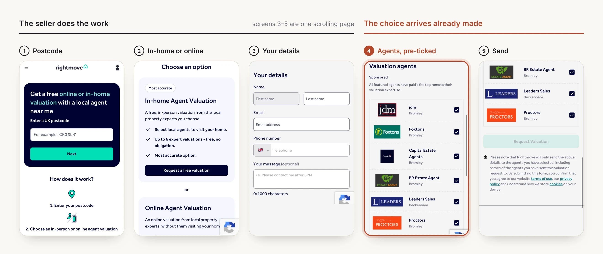
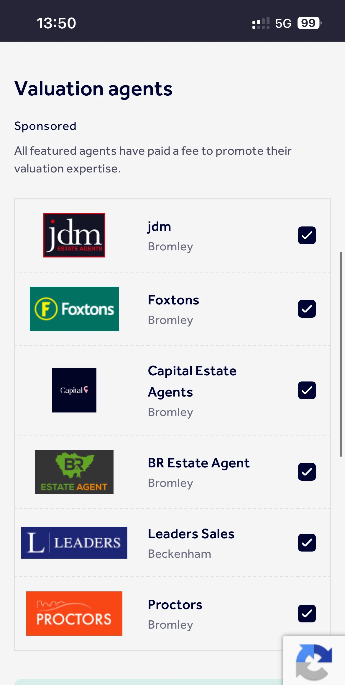

Rightmove's valuation flow says you'll get a visit from local agents you choose. In practice, you get a list where every agent is already ticked and every one has paid to be there. I used that gap to work through what a Lead Product Designer on Rightmove's Partners team would need to solve.
Looked at both sidesSellers have nothing to compare agents on. Agents can only stand out by paying more.
Three directions comparedI explored three different approaches and picked one, with reasons.
A full flowFive seller screens and three agent screens, built as a clickable prototype.
Revenue keptAgents can still pay for placement. It's just labelled clearly and kept separate from the ranking.
Role: self-directed, solo. Based only on Rightmove's public pages. I had no internal data, and this isn't something Rightmove is building.
02
TheProblem
Before designing anything, I went through the live flow on my phone, choosing the in-home valuation option.

rightmove.co.uk/agent-valuation, captured Nov 2026. Steps 3 to 5 are on one page. When you scroll down to the agents, they're already ticked.
For sellers: no real choiceAll six agents are ticked and labelled Sponsored. There's nothing to tell them apart.
For agents: pay or go unseenPaying is the only way to appear. There's no free way in.

The last step of the live flow. Six agents, all Sponsored, all ticked before you read their names.
So neither side has a way to build trust. This is the same problem the job description describes: “helping consumers feel more confident when choosing an estate agent, while helping agents demonstrate the value they offer.”
03
AlternativesConsidered
I wanted three directions that were actually different, so the choice between them would mean something.
Three concepts, compared on the same four questions.
Design decision
I chose the hybrid ranking. It didn't win on every measure, but it was the only one that could ship in stages and be tested with little risk. I also kept the best idea from the transparency-first option: agents can see exactly how their score is calculated.
04
TheApproach
Paying should decide where an agent appears, not whether a seller trusts them. I'd release this in three phases.
Phase 1: Stop the list being 100% paidRightmove already labels these agents Sponsored. What's missing is a list of agents who didn't pay, and boxes that start unticked.
Phase 2: Add a ranking based on performanceTime to sell, price achieved and reply time. Agents without an ad budget get a way to compete.
Phase 3: Link the twoAgents with a high score pay less per lead, so both sides benefit from good service.
05
ThePrototype
I built the whole seller journey in code, so it can be clicked through, not just looked at.
Each screen answers one question. Who should I pick? Why them? Who else is there? Who gets my phone number?
The seller's journey, recorded from the prototype.
Before anyone built this, I'd raise these points with the team:
With Research & DataRewarding accurate valuations could push agents to quote low on purpose. A score based on past sales also makes it harder for new, small agents, who are the ones this is meant to help.
With Commercial & LegalIf sellers contact 2 agents instead of 6, each paying agent gets fewer leads. Whether a chosen lead is worth more needs testing with Revenue. Ranking agents also means Rightmove is recommending them, which has legal implications.
A decision I'd defendI didn't design a Yelp-style comparison page. This flow exists to generate leads, so it shows one recommendation first and keeps comparison optional.
07
Reflection
This is a concept and hasn't been tested. The problem is real, but no seller or agent has used the solution yet.
Test the prototype with sellers against the current flow, and measure how many finish
Check the score against real agent results before using it to rank anyone
Review the pricing model with the team responsible for Premium Listings
See whether agents start gaming the score once it affects their ranking
Why it's in my portfolio
My other case studies show work I shipped with real teams. This one shows how I approach a problem from the outside: understand it properly, explore real options, choose one, and be honest about the risks.